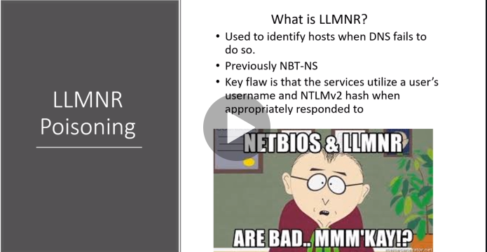

Link Local Multi class Name Resolution (LLMNR)

nbt-ns:Net Bios Name Service

instead of hackme he typed in hackm whohc caused a dns issue and hence server doesnt know what hes talkign about
We ll run a respomder
best time to run it is at the start of day ie morinign r just after lunch coz thats when u get the most traffic na
after u get the hash crack it using hashcat lets sa which gives u the results
THe higher the graphic card the faster you ;ll crakc it
the hghest lenght of password cracked its 19 characters